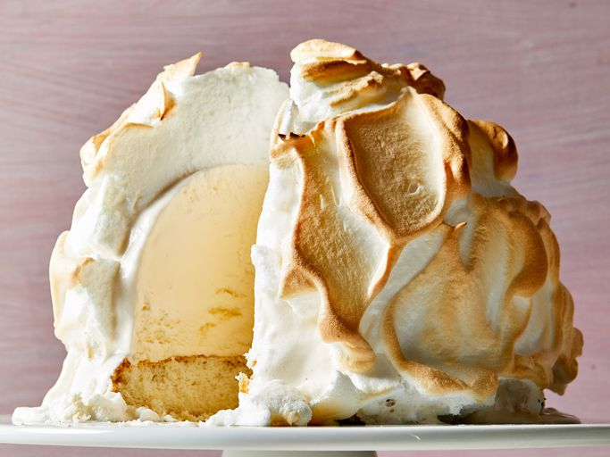

Baked Alaska

What is Baked Alaska?
Baked Alaska is a baked dessert consisting of cake, ice cream, and meringue.
So how does the ice cream not melt during the baking process?
The meringue insulates it from the heat. The treat is baked in a hot oven for a few minutes or just long enough to firm and brown the meringue.
Ingredients
- 2qt. vanilla ice cream, softened
- 8 Egg whites
- 1/8 teaspoon salt
- 1 cup white sugar
- 1 8-inch round prepared white cake layer
Steps
- Line the bottom and sides of an 8-inch round mixing bowl with plastic wrap. Pack softened ice cream into the prepared bowl, then flatten the top and cover with more plastic wrap. Freeze until firm, 8 hours to overnight.
- Prepare your meringue by beating the egg whites, sugar, cream of tartar, and salt in a mixing bowl until stiff peaks form.
- Line a baking sheet with parchment paper and place cake in the center. Remove ice cream from the freezer, discard plastic wrap, and turn ice cream out on top of cake.
- Quickly spread meringue over ice cream and cake, swirling in decorative patterns if desired. Freeze for 2 hours.
- Preheat the oven to 425 degrees F (220 degrees C).
- Bake cake on the lowest oven shelf until meringue is light brown, 8 to 10 minutes.
- Slice your finished dessert and enjoy. Don't forget to share!